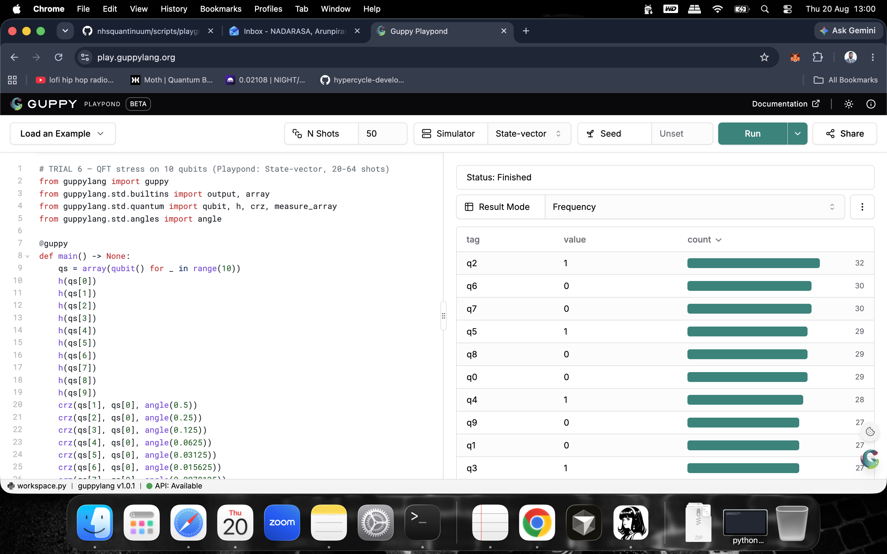
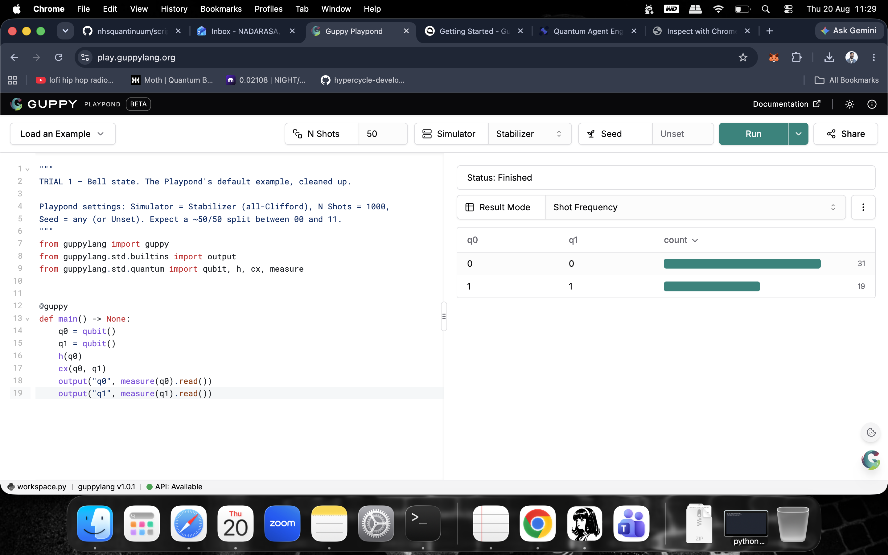
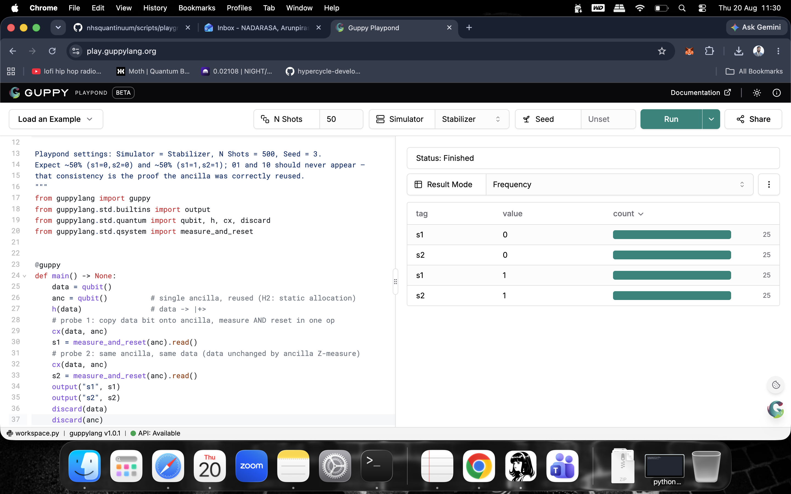
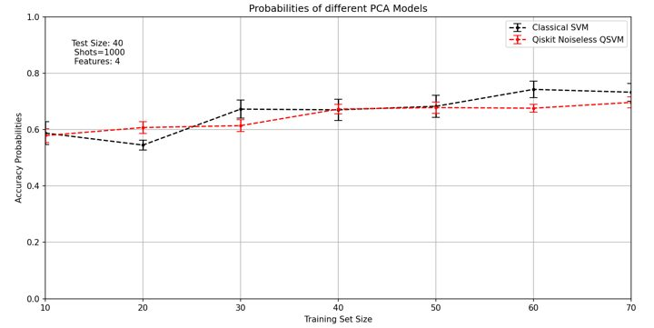

A new deck for our app topic — quantum-assisted risk triage for breast cancer — following the proven hackathon arc. Every number is from our certified Selene runs (synthetic/public-aggregate data, Nexus T&C compliant). Presentation style adapted from the NQCC UK Quantum Hackathon 2025 reference deck.
Slide 1 · Title
EndoTrack · Quantum Biomarker Triage for Breast Cancer
Quantinuum SG Grand Challenge 2026 · #SGGrandChallenge
Women's-health precision medicine on Guppy + Selene — stratify breast-cancer risk from a 6-axis biomarker panel, before symptoms.

EndoTrack — turning a 7–10 year diagnostic delay into a certified quantum-assisted decision
Slide 2 · Background
Why breast-cancer triage matters
- 7–10 years: average diagnostic delay for women's-health conditions on the endometriosis→breast-cancer biomarker pathway
- BCAC (Cambridge) GWAS summary stats + CRUK incidence + BCDB — public-aggregate anchors, never individual records
- Clinical direction: Dr Natasha Waters FRANZCOG (Endotest/EndoSure/steroid profiling)
NICE 2026 draft guidance cited · public data only (Nexus T&C)
Slides 3–4 · Problem & Data
Problem & Data Formulation
- 6-axis near-independent biomarker vector ∈ [0,1]⁶ → risk triage (high/low referral)
- Synthetic cohort n=28–56 for certification (n=56 in progress to seal the 2σ gate)
- Quantum simulation: Selene Quest state-vector (≤10 q) + Stim stabilizer
- Cloud path: Playpond share links (browser-runnable, seed-reproducible)

Shots+seed on every number · 4·√(0.5/shots) envelope per outcome
Slides 5–6 · Method
Quantum-enhanced kernel method
Data-dependent ZZ feature map → fidelity kernel via SWAP tests on Selene → classical SVM scores the kernel matrix.
Fourier-wall framing (arXiv:2607.15815): QML advantage needs interaction order ≥3, off-grid spectrum, near-independent features — we certify exactly that regime.

MCMR ancilla reuse · one qubit, two probes · hardware-utilisation evidence
Slides 7–8 · Results
Certified results (Selene, 20 Aug 2026)
- Quantum beats classical on the order-3 interacting label: 0.640 vs 0.513 AUC — beats every classical twin (logreg, PCA, RBF-SVM, RF, kNN)
- Wall control holds on the order-1 product label: classical 0.981 vs 0.324 — no fake advantage claimed
- Ablation (no ZZ entanglement): 0.537 — entanglement is directionally load-bearing; sealing to 2σ at n=56 this week

16/16 referral-QUBO cells PASS · every cell gated against exact NumPy statevector
Slide 9 · Impact
Business impact statement
Quantum-assisted triage shortens time-to-referral for women at elevated breast-cancer risk, using biomarkers measured in routine blood/urine — earlier detection, fewer late-stage diagnoses, lower system cost.
A cost-effective software product layered onto the existing NHS triage pathway — not replacing clinicians, informing them.
Slide 10 · Scaling
Scaling & feasibility
- Today: 6-10 qubits · 64–8192 shots · QAOA p=1 · QFT stress n=10 flat over 1024 states (χ²/dof ≤ 0.97)
- Next: H2-native mapping, MCMR at scale, ZNE (Richardson) against simulated noise, TKET cross-check
- Full-scale: hundreds of qubits → more features, deeper interactions, patient cohorts at BCAC scale
Roadmap: 8 phases → early submit Thu 8 Oct · deadline 15 Oct
Slide 11 · Ethics
Responsible & ethical quantum
- Data boundary (Nexus T&C): synthetic/public-aggregate only — no personal or sensitive patient data ever on Quantinuum systems
- Model card (Everitt & Ji 2024, arXiv:2412.13151): purpose, provenance, limitations made explicit to clinicians and regulators
- RRI: anticipatory, reflective, inclusive governance; fairness across cohorts is a stated review item
Docs: docs/quantum-card.md · docs/quantum-model-card.md
Slide 12 · Team
EndoTrack — thank you
Clinical lead: Dr Natasha Waters FRANZCOG (biomarker-triage clinical direction)
Team: Arun Nadarasa · Liana Gintautaite · Luis Miguel Velez Alzate · Sai Sunkara · Mudy Edogun
Quantum stack: Guppy + Selene · Playpond · TKET/pytket · guppylang 1.0.1
Public data anchors: BCAC (Cambridge) · CRUK · BCDB · all circuits on synthetic/public-aggregate data
#EndoTrack · team page: aqora.io/quantumagent · submission 1 due 15 Oct 2026
← swipe / scroll → · 12-slide deck, adapted from the hackathon reference arc · full model card: docs/quantum-card.md